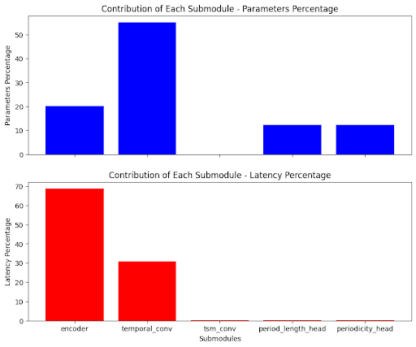

In this case study, we explore compressing neural networks for efficient deployment on edge devices with limited resources. We explore practical techniques like quantization, pruning, and tensorization using off-the-shelf open-source tools.
Our aim is to illustrate a typical model compression workflow, highlighting the approaches and techniques used to analyse a model from a compression perspective, and how to select and apply the appropriate compression techniques expected to yield the best results. We begin our experiment by understanding the target model and how it behaves, before diving into sequentially applying several state-of-the-art techniques and explaining the thought process at each step.
Join us as we go through this process to learn useful insights and optimization strategies to use when deploying models on mobile and edge devices!
NB: If you're interested in trying out these techniques, check out our demo notebook here which you can use to follow along. It provides all the code used to reproduce and experiment with the results presented here.
Understanding the Model
For this experiment, we’ll attempt to compress Google DeepMind's RepNet model. RepNet is a model that predicts the count of repeating actions in a video. Because the model is class agnostic, it can be used to detect various repetitive actions in different contexts.
We chose RepNet for this demonstration because the base model performance is not suitable for running on mobile (as we’ll see below) making it a good candidate for compression. The architecture includes a diverse set of layers that we use to illustrate the use of different compression techniques.

RepNet is composed of three fundamental building blocks, namely: * An encoder layer that generates per-frame embeddings from the input videos. * A temporal self-similarity layer that computes all pairwise similarities (distances) between the calculated frame embeddings. * A period predictor block that outputs the (a) per-frame binary periodicity classification (whether the frame relates to a repeated action or not) and (b) per-frame period length estimation (how many times the action was carried until the frame).
Building Intuition for Compression
Sensitivity Analysis
Instead of blindly applying model compression techniques to the model, it is common practice to identify the latency and memory bottlenecks within the network to perform a more targeted and efficient compression. This sensitivity analysis involves running and timing inference on each major block making up the architecture as well as their trainable parameters.
To measure this, we run inference on a sample of inputs while making sure to separately time each submodule’s latency and measure the number of trainable parameters at each step. This allows us to track how the overall inference runtime and parameters count evolves from one layer to the next, and assess the contribution of each layer to the total inference time and model weight. We start with a warm-up of 10 initial runs and follow up with 32 runs to assess the speed of each component, with results averaged for accuracy. Using PyTorch on a Tesla V100-PCIE-16GB GPU, the script focuses on specific elements such as the encoder, temporal convolutional layers, TSM convolutional layer, period length head, and periodicity head, as the main building blocks of the architecture.
To ensure accuracy, we explicitly define the input sizes for these components based on the expected sequence of input transformation events during inference. For example, the encoder begins with an input size of 64 which is subsequently transformed to an input size of 1 at the temporal convolution layer, and so on. Consequently, we assume an input size of 1 for the temporal convolution layer and 64 for the encoder, precisely aligning with the actual input transformation process.
The analysis reveals that the temporal convolution submodule makes up half of the model’s weights but the encoder submodule is responsible for more than two-thirds of the overall latency. It is thus natural to focus our efforts on these two submodules.

Fig 3. Parameter and Latency Contribution of each Submodule
Baseline Benchmarks
To assess the impact of applying model compression techniques, we track three key metrics namely Model Size, Accuracy, and Latency. For Accuracy, we look at the average OBO (Off by One) error, which shows the percentage of times predictions were off by just one count. Additionally, we use the Average MAE (Mean Absolute Error) to get the average normalised absolute error of predictions. Tracking these metrics helps us understand how the model performs in terms of size, accuracy, and speed, and how these values change when we apply compression techniques.
We use the QUVARepetetions Dataset for benchmarking. The dataset consists of 100 short videos of various repeating actions and is also used by the authors of the model to initially benchmark the performance against comparable architectures.
Since compression is highly hardware-dependent, we begin by running the benchmarks on the target device early on. For this, we use Pytorch's benchmarking binary to run a _scripted _pytorch model on the device without having to learn anything about mobile development.
The table below shows benchmark results for the baseline model on a Samsung S22 Plus phone with batch sizes of 1, 8, and 16. Each frame has dimensions 112x112 and the model processes 64 frames per iteration. The model size is 97.97 MB, with OBO at 0.32 and MAE at 0.17.
| Input Dimensions | Seconds Per Iteration | Iteration Per Second |
| 1,3,64,112,112 | 2.77 | 0.36 |
| 8,3,64,112,112 | 22.5 | 0.04 |
| 16,3,64,112,112 | 49.3 | 0.02 |
Compressing the Model
We can begin our compression experiments now that we have a better idea of various memory and latency bottlenecks in our model and how well it runs on the target device. We first explore pruning, tensorization, and quantization in isolation before experimenting with various combinations of these techniques.
Tensorization
Tensorization involves representing the weights of layers of neural networks in a factorized form using tensor decomposition methods like Tucker, CP, etc. Tensorly-Torch provides off-the-shelf factorized layers that can directly be replaced with their standard pytorch counterparts where the pre-trained weights are used to initialise the layers. However, Tensorly-Torch is not compatible with _torch.jit.script _as highlighted in this issue, so we use TensorLy to perform the decompositions and implement custom factorized layers.
Tensorization works especially well with convolutional layers where kernels of any order ( 2D, 3D, or more!) can be parametrized efficiently using tensor decomposition algorithms. For example, using a CP decomposition results in a separable convolution that can replace your original convolution with a series of small efficient ones that work better on mobile phones.
Tensorizing the Convolution Layer. Because the Temporal Convolution layer consists of the maximum number of parameters, we begin by tensorizing this layer first. Running experiments using different decomposition ranks shows that a rank of 0.1 yields the best results in this case. With this rank, the model size decreases to 62.85MB, and the inference time is cut in half. Notably, prediction accuracy improves with OBO decreasing to 0.29 and MAE to 0.167, without fine-tuning the model. While this is not a common result, we believe the model’s original performance may be impacted by inherent noise, and we attribute the increase in prediction accuracy to the regularisation effect of tensorization which reduces the noise in the network, allowing it to generalise better.
Tensorizing the Feature Extractor. Tensorizing this part was challenging as it includes numerous convolutional layers, making grid searching for optimal ranks impractical. Rank selection for tensor decompositions is a hard problem because determining the optimal rank involves finding the right balance between capturing the essential structure of the underlying data and avoiding overfitting. Selecting a rank that is too low may result in a loss of important information, leading to a poor approximation of the original tensor. On the other hand, selecting a rank that is too high can lead to overfitting, where the model captures noise or irrelevant details, hindering generalisation to new data. Additionally, the computational complexity of searching for the optimal rank increases as the number of possible ranks grows exponentially.
Practitioners generally rely on heuristics or meta-learning for determining the optimal ranks. The authors of Compression of Deep Convolutional Neural Networks for Fast and Low Power Mobile have used Variational Bayesian Matrix Factorization (VBMF) successfully on various networks, including VGG-16 and AlexNet. VBMF is a complicated technique and out of the scope of this post, but on a high level, it involves approximating a matrix VLxM as the sum of a lower-ranking matrix BLxHATHxM and Gaussian noise. After A and B are found, H acts as an upper bound on the rank. VBMF is a very promising tool because it can automatically find noise variance, and rank and even provide theoretical condition for perfect rank recovery (Nakajima et al., 2012). We determined the rank R3 and R4 by applying global analytic VBMF on mode-3 and mode-4 matricization of the convolutional kernel tensors K and managed to reduce the model size to 84.19 MB. In this case, MAE error increased to 0.27 while OBO decreased to 0.29.
Tensorizing the Entire Encoder. Finally, we experiment with tensorizing the entire encoder as it makes up for the bulk of the latency and memory footprint of the model. We use VMBF ranks for the Resnet50 part and a set of different ranks for the Conv3D layer and get the best results with a rank of 0.1. We can see an average of 1.7x speedup across all the batch sizes. This is mainly due to the reduction in arithmetic intensity as a result of tensorization. The model size is reduced to 51.8MB, OBO decreases to 0.30 while MAE increases to 0.21. The results are summarised in the following table:
| Input Dimensions | Seconds Per Iter | Iter Per Second |
| 1,3,64,112,112 | 1.51 | 0.66 |
| 8,3,64,112,112 | 12.9 | 0.08 |
| 16,3,64,112,112 | 32.4 | 0.03 |
Pruning
Pruning is a technique aimed at reducing the size of a deep neural network by eliminating non-essential parameters, or weights. Structured Pruning involves removing specific structures like neurons in a fully connected layer, channels or filters in a convolutional layer, or self-attention heads in transformers. Conversely, Unstructured Pruning targets and removes individual weights based on criteria such as magnitude or their contribution to the overall loss function during training, without adhering to a specific structural pattern.
Given the intended scope of our solution, where we want to deploy on as wide a range of devices as possible, we focus on structured pruning as it is a more hardware-agnostic technique. Because unstructured pruning introduces sparsity in the model, it is generally not suitable for all hardware devices, for example, GPUs are not well-suited for processing sparse matrices, and using unstructured pruning on devices with embedded GPU won’t yield significant performance improvements. Conversely, structural pruning involves removing entire neurons, layers, or other structured components from the neural network to reduce size and complexity and is thus a viable solution regardless of the device. For our experiments, we use the Torch-Pruner library which provides off-the-shelf utilities for structured pruning.
In the following table, benchmark results demonstrate an average 2.19x latency reduction achieved by the pruned model compared to the baseline. Notably, we reduced the model size to approximately 58% of the original model size by pruning 35% of the ResNet encoder layer and 64% of the Temporal Convolution layer. There is a minimal drop in accuracy with MAE at 0.22 and OBO at 0.34.
| Input Dimensions | Seconds Per Iter | Iter Per Second |
| 1,3,64,112,112 | 1.25 | 0.79 |
| 8,3,64,112,112 | 10.8 | 0.08 |
| 16,3,64,112,112 | 22.2 | 0.05 |
Quantization
Quantization refers to the process of converting the weights of a neural network from a high-precision bidwidth (e.g. float32) to a lower precision bidwidth (e.g. float16 or int8). We use Pytorch's built-in Quantization API for all of our quantization experiments.
To determine which parts of the model to target for quantization, we first test-quantize the whole model and measure the Signal-To-Quantization-Noise-Ratio (SQNR) of each layer of the quantized model to quantify the sensitivity of the weights and activations to quantization. SQNR measures the amount of signal power (or information in this context) lost due to quantization, relative to the amount of noise introduced by quantization. A higher SQNR indicates that the layer is less affected by quantization noise, and therefore should be targeted for quantization to minimise accuracy loss. Running this sensitivity reveals that, consistent with the inference sensitivity we conducted above, both the temporal and the encoder layers are better fit for quantization.
We run the final quantization experiments using post-training static quantization which involves calibrating the quantization parameters ahead of time and allows us to compress the model more than we would using dynamic quantization which defines the quantization values during inference. With post-training static quantization, we reduce the model size by 12% and improve model inference by 1.2x speedup compared to the baseline model. Accuracy drop is minimal with OBO at 0.38 and MAE at 0.31. The results are summarised in the following table:
| Input Dimensions | Seconds Per Iteration | Iterations Per Second |
| 1,3,64,112,112 | 2.64 | 0.380 |
| 8,3,64,112,112 | 16.3 | 0.060 |
| 16,3,64,112,112 | 46.9 | 0.022 |
Combining Compression Techniques
Having studied the impacts on the performance of each group of compression techniques, we move into combining them to achieve the best overall performance improvement.
We begin with pruning the model since the use of structured pruning allows us to contain the impact on the model architecture to the removal of layers and blocks of neurons, and doesn’t introduce new components that may be incompatible with the other techniques.
We proceed to apply tensorization on the pruned model, leaving quantization at the end since quantizing the model replaces all the target layers with quantized versions that are not supported by the tensorization operations we use. Combining tensorization with pruning only minimally impacts accuracy but already allows us to achieve almost double the speed-up obtained from pruning only. Interestingly, we also separately tried tensorizing the model first before pruning it and this resulted in a significant dip in accuracy, which highlights the importance of conducting thorough tests when designing optimization pipelines.
Finally, applying SQNR-guided post-training static quantization to the pruned and tensorized model allows us to achieve an overall speed-up of 3.5x compared to the baseline model and a 70.5% decrease in model size. Impact on accuracy compounds but remains within acceptable boundaries with OBO at 0.40 and MAE at 0.21. This lost accuracy can be recovered by subsequent fine-tuning.
| Input Dimensions | Seconds Per Iteration | Iterations Per Second |
| 1,3,64,112,112 | 0.85 | 1.17 |
| 8,3,64,112,112 | 6.3 | 0.142 |
| 16,3,64,112,112 | 13.5 | 0.073 |
Conclusion
Through this blog post, we have outlined the overall process for compressing a model and optimising it for edge deployment by using various techniques and libraries. The following table summarises the results achieved with all the techniques:
| Setup | Model Size (MB) | Speedup | OBO | MAE |
| Baseline | 97.97 | - | 0.32 | 0.17 |
| Tensorized | 51.80 | 1.7x | 0.30 | 0.21 |
| Pruned | 57.56 | 2.19x | 0.34 | 0.22 |
| Quantized | 86.14 | 1.2x | 0.38 | 0.31 |
| Pruning + Tensorization + Quantization | 28.92 | 3.5x | 0.40 | 0.21 |
Of course, the proposed solution isn't necessarily the best depending on the use case, and selecting the appropriate hyperparameters/compression modes often boils down to running several tests to find the combination that strikes the best balance in terms of performance vs accuracy, taking into account one's personal objectives that may involve putting more emphasis on either metrics.
The libraries and tools we used are also not the only ones offering the utilities we needed, and we encourage you to explore using other tools as well! A good place to get started would be our blog post series on model compression where we outline the various tools available and what they uniquely offer, feel free to give it a read to learn more on the topic!
We hope this was informational and that it gave you some insights regarding model optimization, see you in the next one!
Acknowledgements
This case study was conducted at Unify with the collaborative efforts of Muhammad Elaseyad, Nassim Berrada, and Guillermo Brizeula. I extend my gratitude to their valuable contributions and insights throughout the project.